संस्कृतमन्थनम् › गेयमहापुराणमाला · तेलुगु › గేయ వామన పురాణము
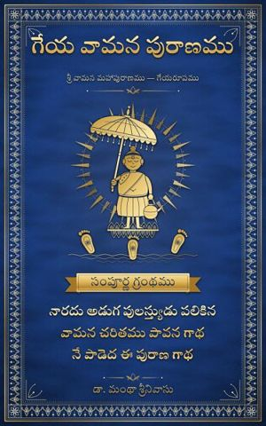
గేయ వామన పురాణము
geya vāmana purāṇamu
శ్రీ వామన మహాపురాణము
Google PlayLibraryఅష్టాదశ పురాణములలో ఒకటైన వామన పురాణము సులభమైన గేయరూపమున — శివ సతుల కథ, దక్ష యజ్ఞ ధ్వంసము, నరనారాయణులు, సుకేశికి ధర్మోపదేశము, కాత్యాయని మహిష వధ, కురుక్షేత్ర సరోమాహాత్మ్యము, ఉమా పరిణయము, శుంభ నిశుంభ వధ, స్కంద జననము, అంధకుని ముక్తి, బలి చరితము, ప్రహ్లాదుని తీర్థయాత్ర, గజేంద్ర మోక్షము, త్రివిక్రమావతారము.
गेयमहापुराणमाला · तेलुगु · Sung Mahāpurāṇas · Telugu
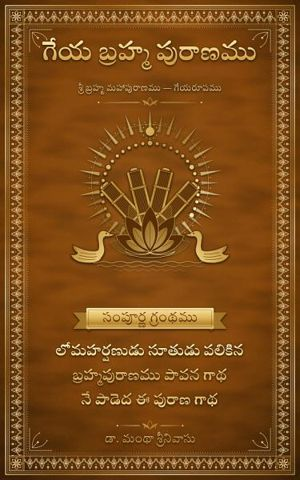
గేయ బ్రహ్మ పురాణముTelugu
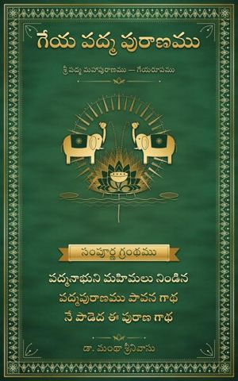
గేయ పద్మ పురాణముTelugu
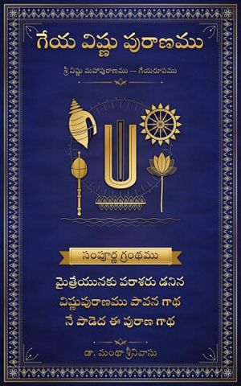
గేయ విష్ణు పురాణముTelugu
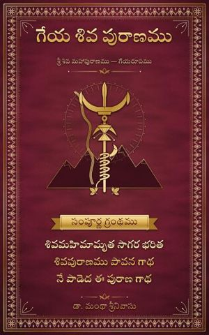
గేయ శివ పురాణముTelugu
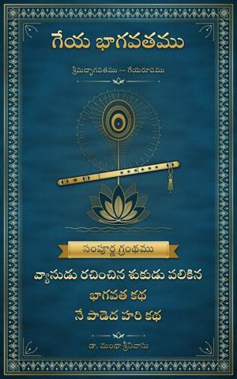
గేయ భాగవతముTelugu
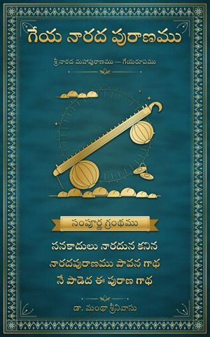
గేయ నారద పురాణముTelugu
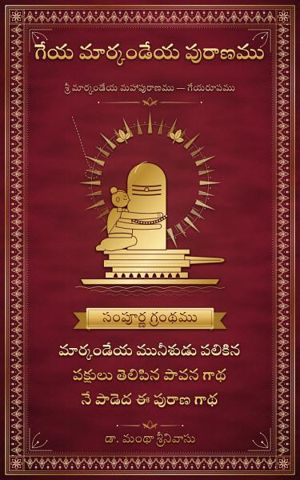
గేయ మార్కండేయ పురాణముTelugu
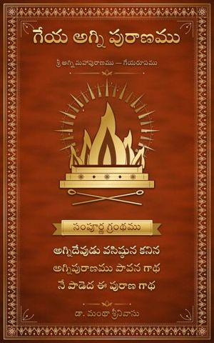
గేయ అగ్ని పురాణముTelugu
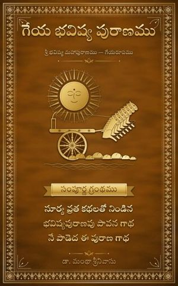
గేయ భవిష్య పురాణముTelugu
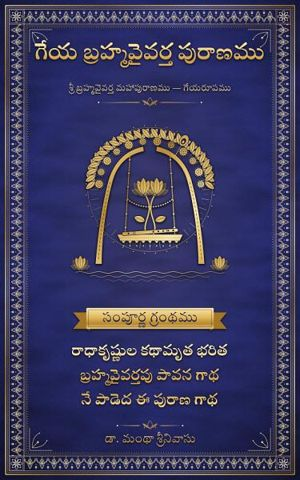
గేయ బ్రహ్మవైవర్త పురాణముTelugu
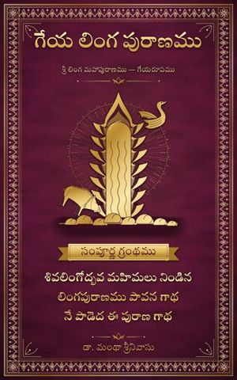
గేయ లింగ పురాణముTelugu
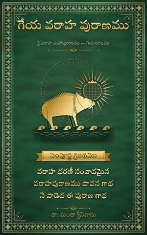
గేయ వరాహ పురాణముTelugu
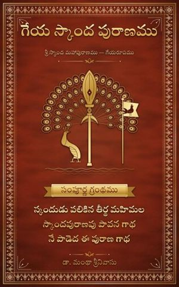
గేయ స్కాంద పురాణముTelugu
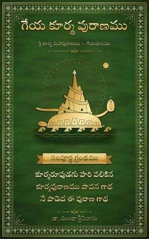
గేయ కూర్మ పురాణముTelugu
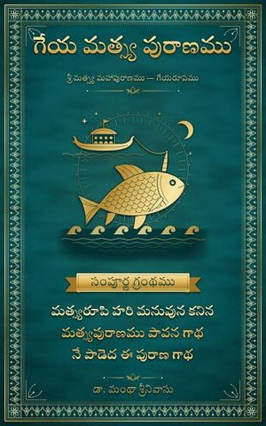
గేయ మత్స్య పురాణముTelugu
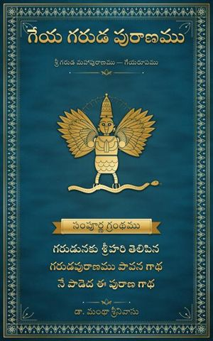
గేయ గరుడ పురాణముTelugu
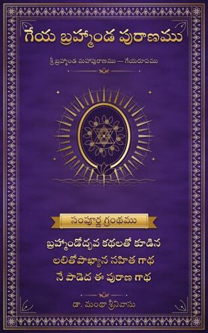
గేయ బ్రహ్మాండ పురాణముTelugu